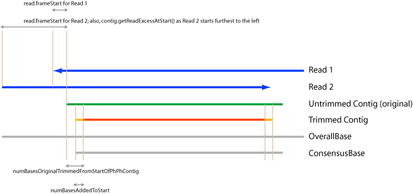

Chromaseq Source Code Notes
The most complex part of Chromaseq is the bookkeeping involved in making sure
that all of the bases in the different components are registered properly.
For example, we need to know that this particular peak corresponds to this
particular base call in the Phred file which corresponds to this base in the
Phrap contig which corresponds to this particular base on screen in the trimmed
sequence which corresponds to this particular base in the quality score matrix
which corresponds to this particular base in the main editable matrix.
These components exist as two primary clouds: The Phred/PhrapCloud and the
MesquiteMatrix Cloud. The Phred/Phrap Cloud contains the AceFile,
contigs, reads, original chromatograms, etc.; basically, all of the output
from Phred
and Phrap, as contained in the files (.phd, .ace, etc.) in the directory that
Phred and Phrap processed. The Mesquite Matrix Cloud contains
the original matrix, the quality data matrix, and the edited matrix. And, of
course, there is a pipeline of code that provides the linkages between those
two clouds.
These
are the systems that connect bases:
- Within the Phred/Phrap Cloud:
the system of coordination established by Phrap, and that is stored in Contig
and Read, that establishes links between the original Contig and the original
Reads, with padding, etc. The Contig stores in its bases the original,
UNTRIMMED sequences, corresponding to those in the m.ace file. This contig
has already
had all of the other
alterations on it that Mesquite performs (e.g., convert to lower
case, ambiguity codes). Contig also stores in trimmedBases the bases that
remain after trimming. It also stores the padding information for the untrimmed
sequences.
- Within the Mesquite Matrix Cloud: the registration system, which connects
the various matrices within Mesquite (original matrix, quality data, edited
matrix)
- The original matrix (originalData)
contains the exact matrix as originally imported. This is after Mesquite
trimming etc. (convert to lower case, ambiguity
codes).
- The quality data contains the quality scores for the original
data, and there is a one-to-one mapping between cells in originalData
and cells
in qualityData
- The edited matrix contains the current, actively edited
matrix.
The registration system that connects these cells in these
matrices one to another is managed in ChromaseqUtil as
well as ChromaseqBaseMapper.
The registration system relies on several helper matrices to store the
relevant information:
- Registration matrix (MeristicData registryData), which
is a meristic matrix that should be the same dimensions as the edited matrix.
Cell i for a sequence
stores the number
of the cell in the originalMatrix that corresponds to that cell in the
edited matrix
- Reverse Registration matrix (MeristicData reverseRegistryData).
This is a meristic matrix that should be the same dimensions as the originalMatrix.
Cell i for a
sequence stores
the number of the cell (character) in the editedMatrix that corresponds
to that cell in the original matrix
- Added Bases Matrix (CategoricalData
addedBaseData): if any bases are added, presumably either in
the chromatogram viewer or in the character matrix editor itself. Should
be
the same size as the edited matrix. If a cell in the AddedBasesMatrix
is 0, then the corresponding base in the edited matrix is an original
base;
if it is 1, then the corresponding base is a new base, not part of the
original matrix.
- And then there are the mappings between these different clouds as well as
the displayed sequences in the chromatogram viewer. These are shown here:

In particular, the mappings include:
- the
connection between the numbering in the original
matrix/trimmed Contig numbering and what
is called
the Consensus
base,
which
is the numbering
in
the Contig that is padded and untrimmed.
ConsensusBase = base in originalSequence
(i.e., originalData) + numBasesOriginallyTrimmedFromStartOfPhPhContig-numBasesAddedToStart;
numBasesAddedToStart
is stored in Contig.
- the connection between the original Consensus numbering and the number
of the OverallBase, which is just like the Consensus
numbering but it is offset,
as there are some Reads that extend before the start
of the original (untrimmed) Contig. The Read that extends furthest to the
left (furthest
upstream)
extends
contig.getReadExcessAtStart() to the left, and thus,
in OverallBase numbering, the first base of the (untrimmed) Contig is numbered
getReadExcessAtStart().
The OverallBase numbering exactly matches the Contig/Consensus
numbering, except that it is offset.
- The DisplayBase is very similar to the OverallBase, but may have additional
bases inserted into it. There thus needs to be a mapping
between the two. There also needs to be mapping between one of these and
the matrix
registration
system, presumably via either originalData or editedData.
- The mapping between the pixel position in the Chromatogram Viewer window
and the DisplayBase.
A lot of the code for managing this is contained in the following places:
- VChromWindow.ContigPanel,
toward the end.
- MatrixSequence
- ChromaseqBaseMapper
- ChromaseqUtil